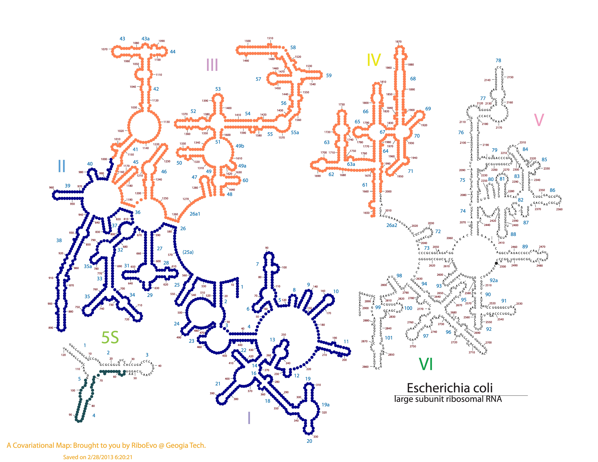
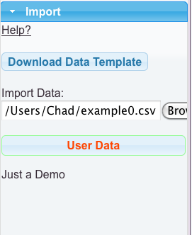
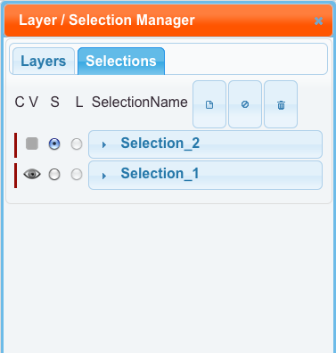

Importing data currently works by reading in a CSV (comma separated value) text file. You can make the CSV files with anything. Most people would probably use Excel or another spreadsheet program to make them. Make sure to save them with windows/dos or unix formatted lines. The CSV library does not work with mac formatted lines right now.
We currently support one set of data, to make one layer, per file. RiboVision looks for four coloums, ResNum, DataCol, ColorCol, and DataDescription. You can have any other coloumns in the file that you like, but RiboVision will currently ignore them. Import Data mode is currently limited to mapping residue related information. It can not yet draw lines, or turn on proteins, or anything like that. We support two use cases for now: manual coloring, and color by data. Color by data is currently limited to the Rainbow gradient. It converts your numbers into a linear gradient. If you need a log-based gradient or something, please transform your numbers first. See these tutorials for further information: Manual Coloring and Color by Data.
We are providing basic data templates for each molecule. Please be sure to exactly match the template to your map of interest. These templates contain every nucleotide listed individually. Using the templates is not required, as long as you name your nucleotides correctly.
Import data feature uses the same syntax as selections. We reccommend you always use the prefixed syntax, because it is clearer. You may put multiple selection commands in the same line, separated by semicolons as usual, if they share the same data or color. Alternatively, you can have these on separate lines. Use whatever is most convenient for you. You don't need to include all nucleotides in the file. If you put in the same nucleotide more than once, it will obtain the color/data from the last occurance. Make sure that the nulceotides you explicitly include exist in the secondary structure you are using. For example, T. thermophilus does not have a 23S:655. The selection 23S:(600-700) is fine, but the selection 23S:(600-655) is not fine. You would need to use 23S:(600-652B) if you wanted to stop right before 23S:656.
resNum, DataCol, ColorCol
23S:(1-1000), p1, DarkBlue
23S:(1001-2000), p2, Coral
5S:(56-104), p3, #1D4E56
23S:2500, p4, #232323
Here is the csv file for this example. Below, is this file mapped onto E. coli LSU Phylogeny Structure. 
Colors can either be HTML5 color names or RGB hexidecimal codes. Here is a good list of color names. Here is a good converter between different color models.
We have reserved two colors for special use. We interpret perfect black, "#000000", to mean "no color". Assigning this color to nucleotides will make the letters black, as expected. However, applying #000000 to circles will make the circles not be drawn at all. If you would like black circles, use any other shade of black. For example, the colors "#000001", and "#010101", look indistinguishable from perfect black. We have also applied a special meaning to the color "#858585". It means "no color" in the same way as "#000000". It is a nice medium gray shade. Letters will show up in gray as expected. Circles won't show up at all. In addition to this, any nucleotide (letter or circle) in the "Linked" layer with either of these colors, will show up as gray in Jmol.
Mapping your data onto ribosomal strucures works just like displaying our precomputed data. After loading your data file, a dataset called "User Data" will appear. Drag this to your layer of choice. There is an additional feature right now. Every nucleotide included in your file will be put into a new selection, found in the Selection Manager. The selection will be invisible by default.
 